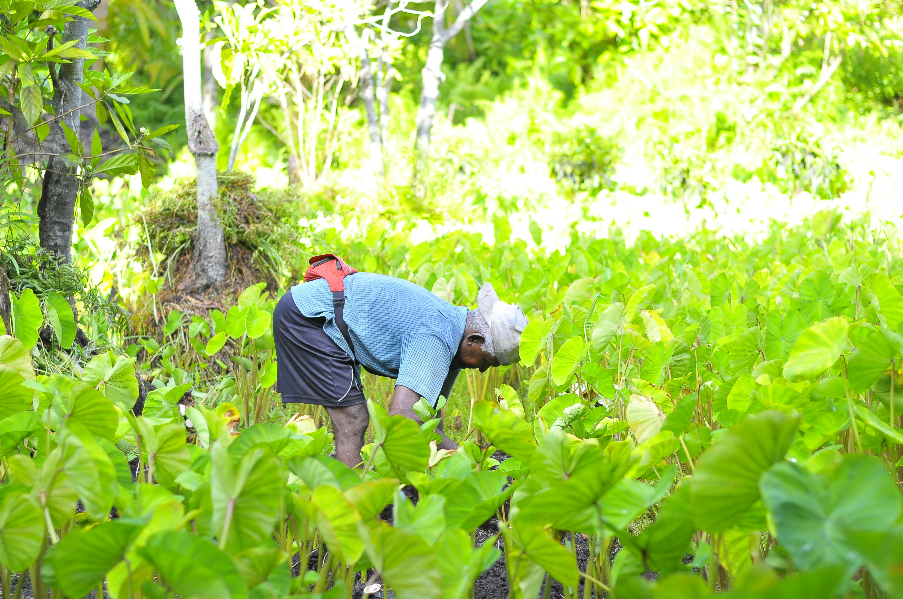

Welcome to Restoration of Land and Culture: Hawai’i! I believe that the land and the culture belong together. This site's purpose is to spread awareness and explain what has happened to our islands over time and why things look the way they do today. Hawai'i is known as paradise now days, but it was never that. Througout this website, you will discover the cultrual practices, like Makahiki Season, games and what the season was used for. This website will also go over how the land and islands were used before. You will also learn the challenges that were faced in these restoring efforts, like how tourists affected Hawai'i and how we were used on commercials, the history behind Hawai'i and how the community is working together today to overcome it and so much more!
By exploring this website, my goal is for the visitors to understand the struggles and the insights of Hawai'i and to leave with a diffrent prespective. The content I give in this website will explore beyond to what is taught in general. I want the visitors to see the impact of how the events affected Hawai'i and the signafance that is now left. It is also my goal for you to get a deeper understanding and how you can contribute.